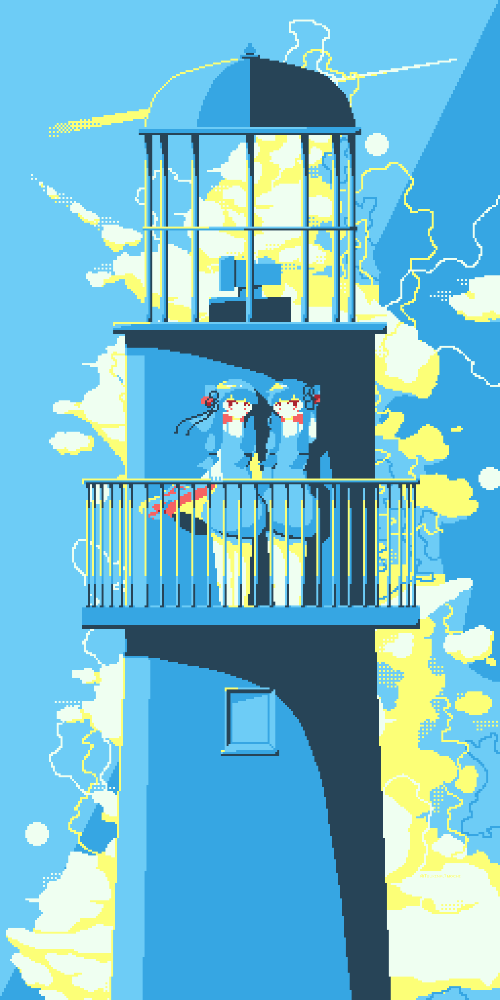

Abstract
pixel-artist | front-end web developper | indie game developperMooncake is just a food.
Illustrations


Unauthorized use of the work is prohibited.
Products
Aseprite

Export as PSD
LCD Pixel Filter
Smooth Filter
Voiceroid
Voiceroid2 Automation Lib